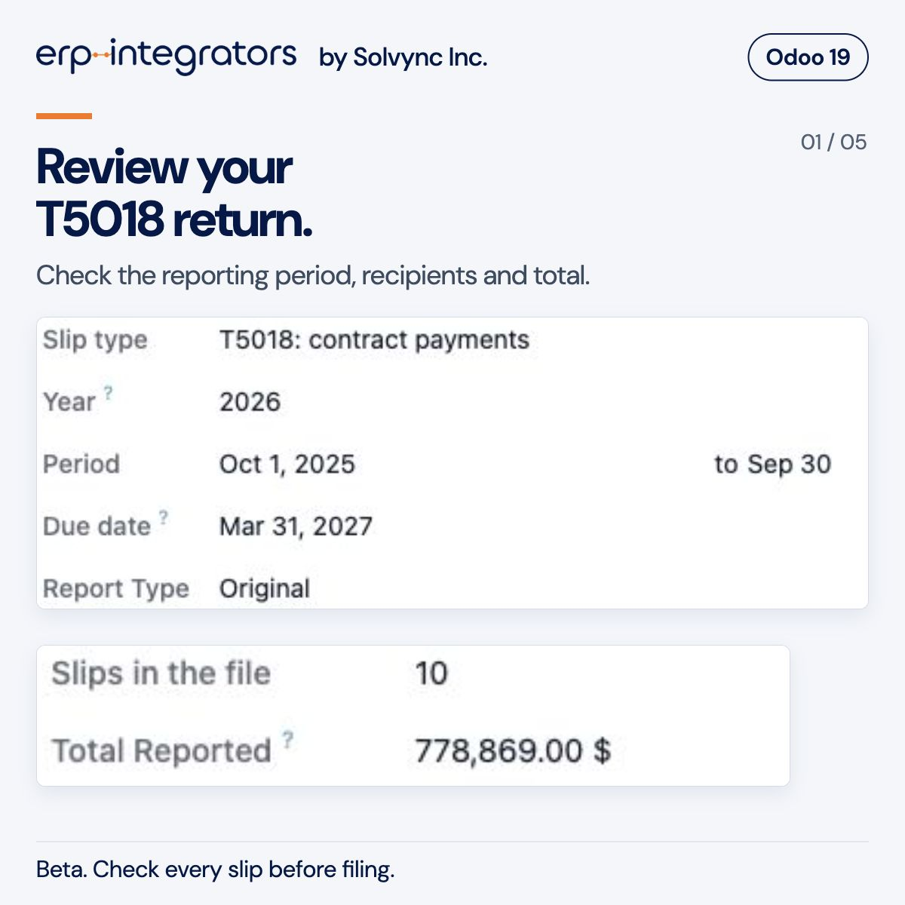
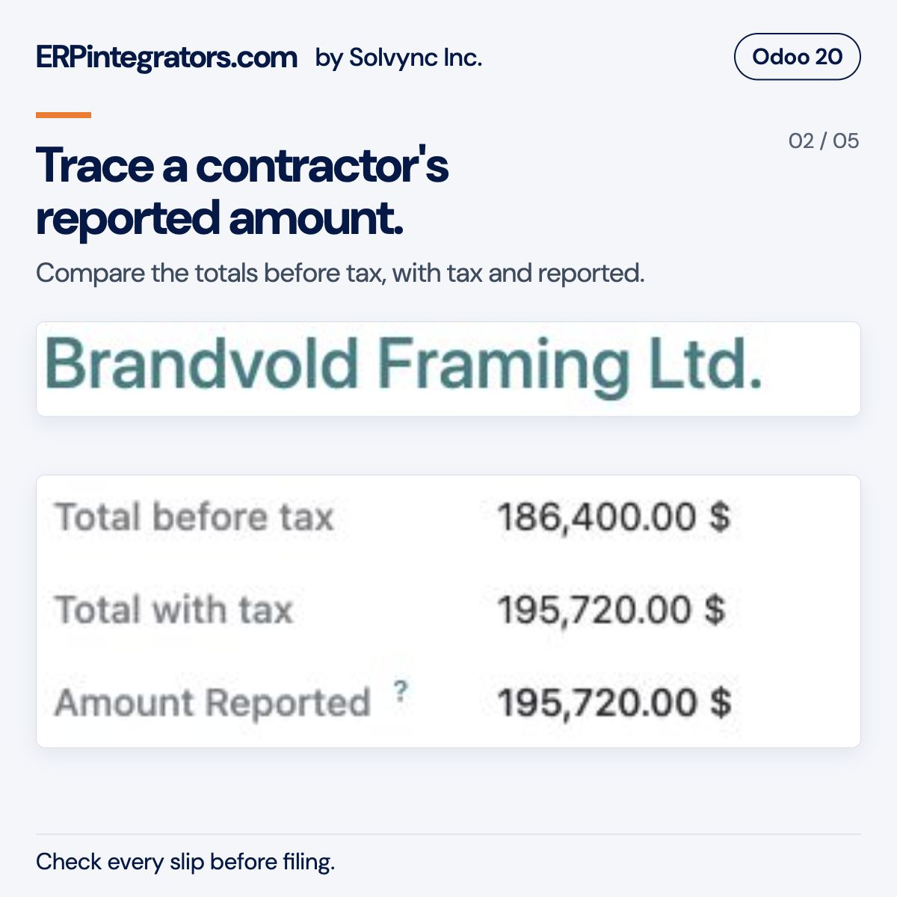
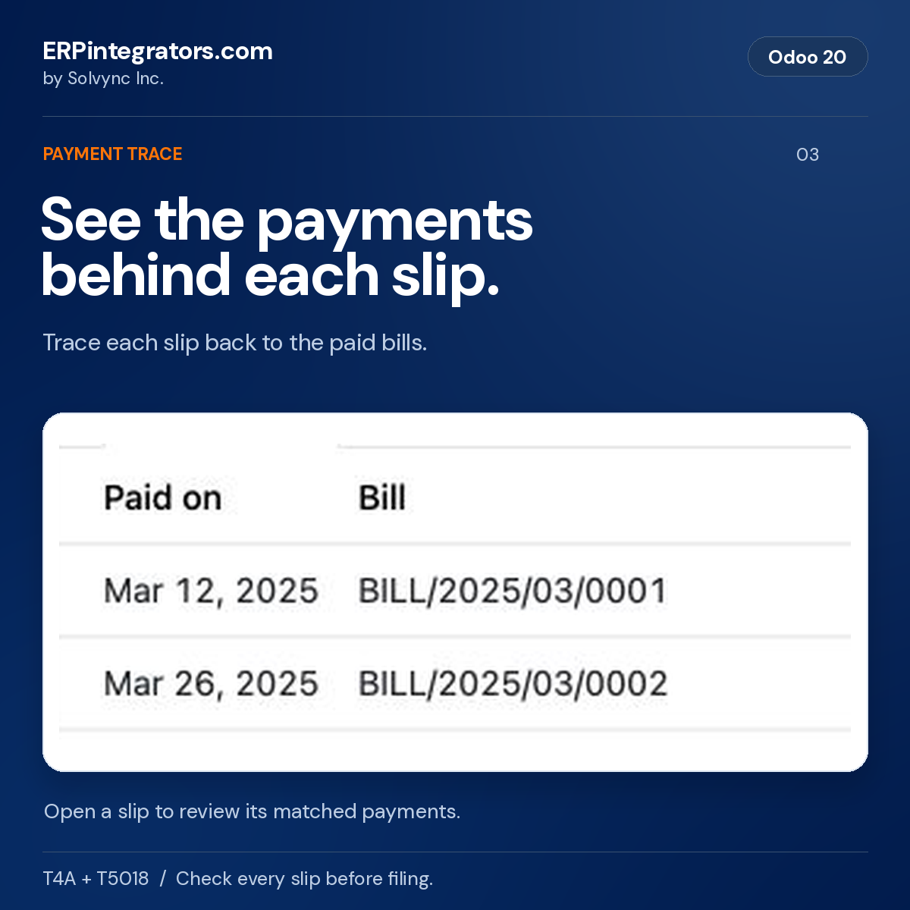
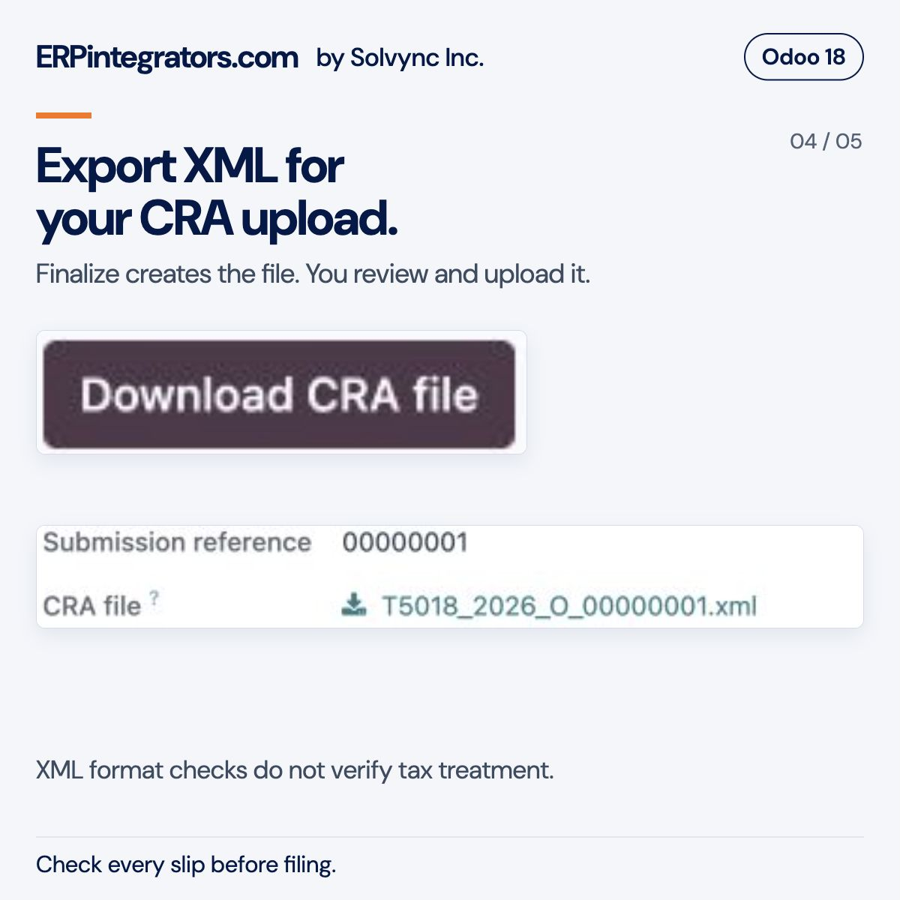
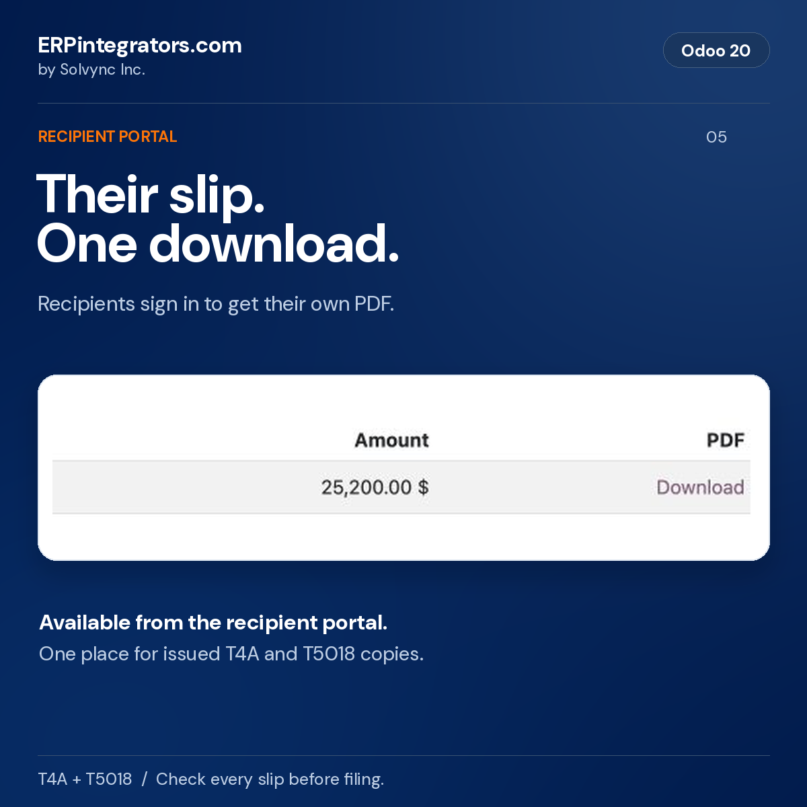

Version 18.0.1.2, free beta.
Requires Odoo 18 Community or Enterprise, on Odoo.sh or your own server. Odoo Online is not supported.
Module price: 0 (free). Hosting, Odoo subscriptions and separately agreed services are excluded.
Published by ERPintegrators.com, by Solvync Inc.. Check every slip against your records before filing.
License: LGPL-3
ERPintegrators.com | by Solvync Inc.
Prepare T4A box 048 and T5018 contractor tax slips in Odoo 18, using the vendor payments recorded in your accounting. Review each contractor's total, trace the bills and payments behind it, and create a CRA XML file for your business to review and upload.
The module covers two Canadian contractor reporting workflows:
Amounts come from what you actually paid. The module reads posted vendor bills and the cash matched to them, so a bill dated in December and paid in January counts in January, a refund lowers the total. T4A leaves goods out; T5018 follows the selected mixed-bill setting. A credit note applied to a bill counts as settling both, each at its own mix of services and goods. Foreign-currency bills count the Canadian dollars actually paid, and an early payment discount reduces only the bill that earned it. Every amount on a slip links back to the bills and payments behind it.
From there you can:
It runs on Odoo Community and Enterprise, on Odoo.sh or your own server, and uses standard Odoo records throughout: contacts, the Tax ID field, account tags, vendor bills, payments and bank reconciliation. Odoo Online databases cannot install modules from the app store. The module downloads CRA's public XML schemas from canada.ca the first time you finalize a return.
These screens show a staged T5018 return in Odoo 18 Enterprise. Names, amounts and records are demo data. The module also supports T4A box 048. Each image focuses on one part of the workflow; the accounting and filing limits below apply to both editions.





It prepares T4A box 048, fees for services, from supported contractor payments in Odoo. It does not prepare the full range of T4A income boxes or employee T4 payroll slips. Review the setup instructions and known limits with the person responsible for your return.
You download the T4A or T5018 XML file and upload it through CRA's Internet File Transfer service using your own authorized account. The module checks XML structure against the published schema. It does not submit the return or verify CRA acceptance.
Each calculated slip lists the supported payments and bills behind its amount. Review these lines, the return's warnings and any adjustments before filing. Opening balances and journal settlements need the checks described in the setup instructions and known limits.
You can print recipient PDFs or provide them through the recipient's Odoo portal. Email delivery requires the recipient's consent and your own configured outgoing mail server. Review portal access, consent, paper requests and delivery results before treating delivery as complete.
Use Odoo 18 Community or Enterprise on Odoo.sh or your own server. Odoo Online does not allow installation of this custom Python module. The accounting workflow uses Canadian localization and the setup described below.
The module is free under LGPL-3. Hosting, Odoo subscriptions and any separately agreed implementation or support services are outside that price. Check each slip against your records before filing. Your business remains responsible for the return and recipient delivery.
Assign an owner to check the current CRA schema, form requirements and your reporting settings before each filing season. Read the known issues and roadmap before choosing a filing workflow. Current CRA interpretation questions remain part of the beta review.
This module helps you prepare T4A and T5018 returns for the Canada Revenue Agency (CRA). It gives no tax, accounting or legal advice; decide what is reportable with your accountant.
You remain responsible for every slip, the file you upload, deadlines, delivery to recipients, and any CRA penalty or interest. This is a beta release, so check each slip against your records before filing.
Schema validation checks the file's format only. It cannot tell you whether amounts or identifiers are correct, or whether CRA will accept the return.
Solvync Inc. has no affiliation with CRA, and CRA has not endorsed this module.
This free software is licensed under the GNU Lesser General Public License, version 3. To the extent the law allows, it is provided as is, without warranty of any kind, including as to accuracy, and Solvync Inc. is not liable for any loss arising from its use.
The business using this module is accountable for the personal information in it under PIPEDA or its provincial equivalent. Solvync receives none of it. The only outside call the module makes downloads CRA's public schemas from canada.ca, and it sends no data.
SINs are collected under section 237 of the Income Tax Act and used for these slips only. Odoo stores them in the database and its backups without encryption, so give accounting administrators two-step login and mask SINs in any copy made for support. Each SIN sits on the contact, kept for the main company that collected it, on every slip that reported it and in the CRA file stored with each return. Clearing it from the contact leaves those copies, and the module cannot yet remove SINs from final or filed returns, so agree with your accountant how you will destroy them once each return's six-year record period ends. CRA requires the recipient's consent before slips are emailed, and emailed slips carry the full SIN over ordinary email. Odoo deletes the emailed copy once it is sent; a failed email keeps its PDF until the slip is emailed again, for at most 30 days. Odoo 18 controls dynamic template editing through system administration and Mail Template Editor permissions. Give those rights only to people trusted to see SINs; Odoo 18 has no separate Restrict Template Rendering setting. An exposed SIN will usually meet the real risk of significant harm test, which brings duties to report and notify (PIPEDA section 10.1; Alberta PIPA section 34.1).
Uninstalling the module deletes every return, slip and CRA file it holds, any slip email still waiting, and the SINs, slip settings and email consents stored on contacts. Download the CRA files, keep the PDFs you need and export your consent records first. The T4A and T5018 tags are removed from your accounts as well.
Work in the main company for all of the steps below. Returns belong to the main company, cover every branch, and read their settings, each contact's slip type and each contact's email consent from there. In a database with several businesses, each main company files its own returns, with its own program accounts, slip types and email consent. Odoo shows the settings to administrators only.
On Odoo 18, the module also installs the standard VAT Number Validation module for Canadian business-number checks. Preparing and merging contractor contacts needs Odoo's Contact Creation permission as well as the accounting administrator role. Grant these through the normal user settings.
In Accounting > Configuration > Settings (Invoicing on Odoo Community), under Canadian Contractor Slips, enter:
File T5018 only if more than half of your business income comes from construction. Other payers report construction subcontractors in T4A box 048. Slip amounts must be in Canadian dollars, so the company's currency must be CAD.
On each contractor's contact, in the Invoicing tab, set Canadian slip to T4A or T5018 and choose the slip recipient type: individual or sole proprietor, corporation, or partnership. A return will not finalize until it is set on every contractor. Enter the SIN for individuals while working in the main company. Each main company keeps the SIN it collected, visible to its own accounting administrators only. The surname and given name come from the contact name; type them on the contact when the name has more than two words or is written surname first. The return lists each slip's surname and given name, so check them before finalizing. Businesses use the standard Tax ID field for their 15-character business number. Tick Slips by email only when the recipient has agreed, in writing or electronically, to receive slips by email, and keep that consent with your records. Consent covers only the company it was given to, so a recipient paid by two of your businesses consents to each separately. Tick Wants paper slips for anyone who asked for paper. The other recipient details (name, address, recipient type) belong to the contact, so every company that can open the contact sees them. Where businesses in one database should not see each other's contractors, set the contact's Company field to the main company that pays them. Avoid setting it to a branch: head-office users without that branch could not open the contact. Merging a contractor's contact with another moves its SIN, consent, slip type and slips, filed ones included, to the kept contact, whose portal login can then open them. So only an accounting administrator who works in every main company that pays the contractor can merge it. Duplicate rules set to merge automatically in Odoo Enterprise's Data Cleaning run as the system and skip that check, so leave contractors to manual merging. Each vendor bill records the contact's slip type when it is posted, in the Canadian slip field under Other Info. A contractor who moves from T4A to T5018 mid-year keeps the earlier bills on T4A. Bills posted before you flagged a contact follow the contact. An accounting administrator can set a bill to Not reported to leave it out.
Tag the expense accounts you pay contractors from with T4A box 048: fees for services or T5018: construction services. Bill lines on those accounts count for contacts set to the slip, and the return names any other vendor paid on them. For T4A, lines with a service product count too. Lines with a goods product never count. If you hold back part of each subcontractor bill, tag the holdback account with the T5018 tag as well, so holdbacks count when they are paid. Payments booked from bank, cash and credit card journals straight to a tagged account count as well. T4A payers who hold back part of a contractor's fees tag the holdback account with the T4A tag. Release a holdback with a vendor bill on the holdback account, or pay it straight from that account; a payment that settles a journal entry is flagged and left out, because the entry does not say what it paid for. The same goes for opening balances: in your first year on Odoo, enter unpaid contractor bills as vendor bills on a tagged account so their payments count.
Odoo copies the tags of the account whose code sorts just before a new account's code. After you tag an account, check the tags on any account you create next to it, and review which accounts carry each tag before every filing season.
CRA asks for box 048 on payments between businesses, including corporations, in every industry. It currently assesses penalties for leaving box 048 out only where its administrative policy for trucking applies: from 2025, businesses in the trucking industry paying Canadian-controlled private corporations in that industry. That policy concerns completing box 048; penalties for filing an information return late are a separate matter. Flag service contractors unless your accountant advises otherwise.
The CRA schemas download automatically the first time you
finalize a return. To fetch them ahead of time, use Download CRA
schemas in the same settings block. A server without internet
access can point the system parameter
l10n_ca_contractor_slips.cra_schema_url at a copy of CRA's
schema package on an internal web server.
Print slips at actual size, with any "fit to page" or scaling option in the print dialog turned off: CRA's rules for slips you print yourself set their size and text size.
Stored CRA XML and queued slip PDFs are private to the paying company's accounting administrators. Public attachment flags and download tokens do not grant access to these files. Upgrading the module revokes legacy public links and restores payer restrictions while retaining the file bytes. Recipients use their own slip portal, which applies the recipient and masking rules.
This module is maintained by Solvync Inc.